Assignments
This page will contain all the assignments you submit for the class.
Assignment 1
Collaborators: Theodora Athanitis and Halle Wasser
Problem 1
Install the datasets package on the console below using install.packages("datasets"). Now load the library.
# install.packages('datasets')
library(datasets)Answer: Installed!
Load the USArrests dataset and rename it dat. Note that this dataset comes with R, in the package datasets, so there’s no need to load data from your computer. Why is it useful to rename the dataset?
dat <- USArrestsAnswer: Renaming data sets ensures that you do not edit any of your original data on accident, and it is also easier to type.
Problem 2
Use this command to make the state names into a new variable called State.
dat$state <- tolower(rownames(USArrests))This dataset has the state names as row names, so we just want to make them into a new variable. We also make them all lower case, because that will help us draw a map later - the map function requires the states to be lower case.
List the variables contained in the dataset USArrests.
names(dat)## [1] "Murder" "Assault" "UrbanPop" "Rape" "state"Answer: The variables are Murder, Assault, Urban Population, and Rape, in addition to the new variable that we just created, state.
Problem 3
What type of variable (from the DVB chapter) is Murder?
Answer: Murder is a quantitative variable according to the DVB chapter because we are measuring the amount of murder arrests per 100,000.
What R Type of variable is it?
class(dat$Murder)## [1] "numeric"Answer: In R, the data points in the Murder column are numeric variables according to the class() function.
Problem 4
What information is contained in this data set, in general? What do the numbers mean?
head(dat)## Murder Assault UrbanPop Rape state
## Alabama 13.2 236 58 21.2 alabama
## Alaska 10.0 263 48 44.5 alaska
## Arizona 8.1 294 80 31.0 arizona
## Arkansas 8.8 190 50 19.5 arkansas
## California 9.0 276 91 40.6 california
## Colorado 7.9 204 78 38.7 colorado`?`(USArrests)Answer: Generally, this data set contains rates for specific crime arrests per 100,000 people collected by D.R. McNeil, as well as percentages of urban population per state in 1973. The numbers in the Murder, Assault, and Rape columns are equivalent to the calculated arrest rates for Murder, Assault, and Rape. The Urban Population numbers are the percentages of the population in each state that live in an urban area.
Problem 5
Draw a histogram of Murder with proper labels and title.
hist(dat$Murder, xlab = "Murder Arrests per 100,000 People",
main = "Frequency of Murder Arrest Rates in the US", col = "purple")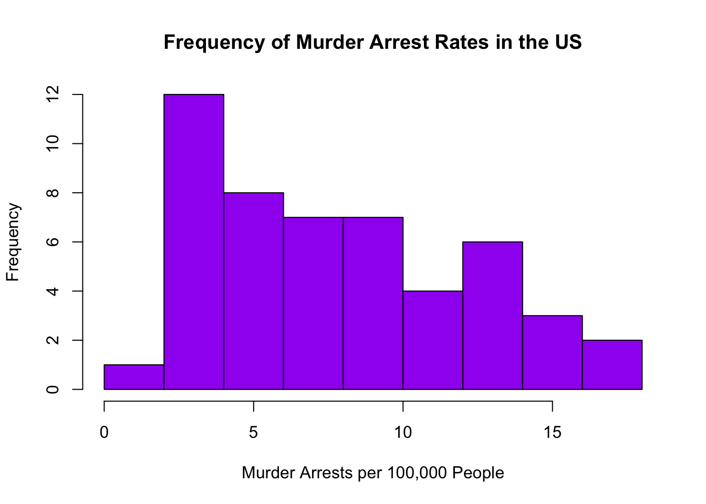
Problem 6
Please summarize Murder quantitatively. What are its mean and median? What is the difference between mean and median? What is a quartile, and why do you think R gives you the 1st Qu. and 3rd Qu.?
summary(dat$Murder)## Min. 1st Qu. Median Mean 3rd Qu. Max.
## 0.800 4.075 7.250 7.788 11.250 17.400Answer: The mean is 7.788. The median is 7.250. Q1 is 4.075 and Q3 is 11.250. The minimum value is .800 and the maximum value is 17.400. Mean and median are both measures of center; however, the mean is the average value of a data set, which is calculated by adding all of the values and dividing by the number of total data points, and the mean is calculated by finding the middle value when the data set is arranged in order. A quartile is essentially the same as a median, but with 25% and 75% of the data, rather than 50%. This means that 25% of the data in a data set is below the 1st quartile, 50% is below the second quartile (the median), and 75% is below the 3rd quartile. R gives you quartiles in order to help visualize the data and see if it is distributed symmetrically, and only gives you quartiles 1 and 3 because the median is the 2nd quartile.
Problem 7
Repeat the same steps you followed for Murder, for the variables Assault and Rape. Now plot all three histograms together. You can do this by using the command par(mfrow=c(3,1)) and then plotting each of the three.
hist(dat$Assault, xlab = "Assault Arrests per 100,000 People",
main = "Frequency of Assault Arrest Rates in the US", col = "Blue")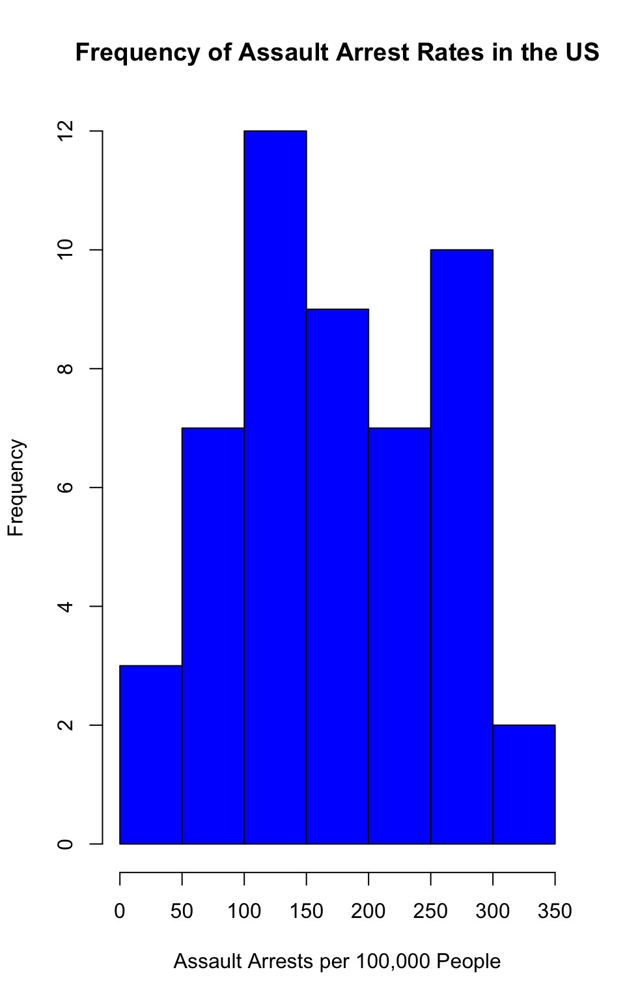
summary(dat$Assault)## Min. 1st Qu. Median Mean 3rd Qu. Max.
## 45.0 109.0 159.0 170.8 249.0 337.0Answer: The mean is 170.8. The median is 159.0. Q1 is 109.0 and Q3 is 249.0. The minimum value is 45.0 and the maximum value is 337.0.
hist(dat$Rape, xlab = "Rape Arrests per 100,000 People", main = "Frequency of Rape Arrest Rates in the US",
col = "Red")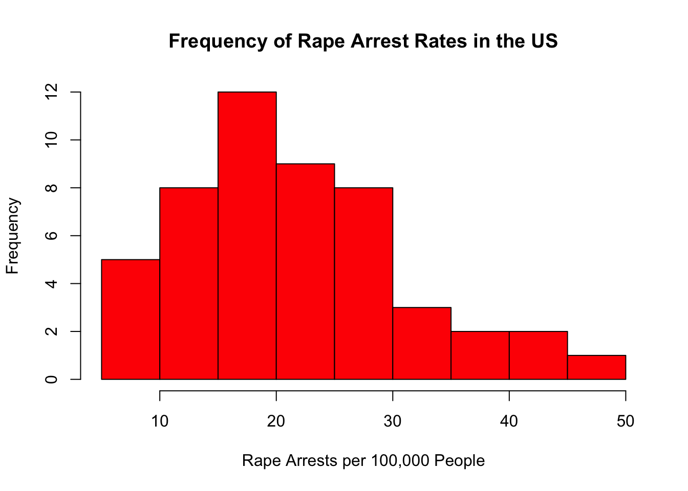
summary(dat$Rape)## Min. 1st Qu. Median Mean 3rd Qu. Max.
## 7.30 15.07 20.10 21.23 26.18 46.00Answer: The mean is 21.23. The median is 20.10. Q1 is 15.07 and Q3 is 26.18. The minimum value is 7.30 and the maximum value is 46.00.
par(mfrow = c(3, 1))
hist(dat$Murder, xlab = "Murder Arrests per 100,000 People",
main = "Frequency of Murder Arrest Rates in the US", col = "purple")
hist(dat$Assault, xlab = "Assault Arrests per 100,000 People",
main = "Frequency of Assault Arrest Rates in the US", col = "Blue")
hist(dat$Rape, xlab = "Rape Arrests per 100,000 People", main = "Frequency of Rape Arrest Rates in the US",
col = "Red")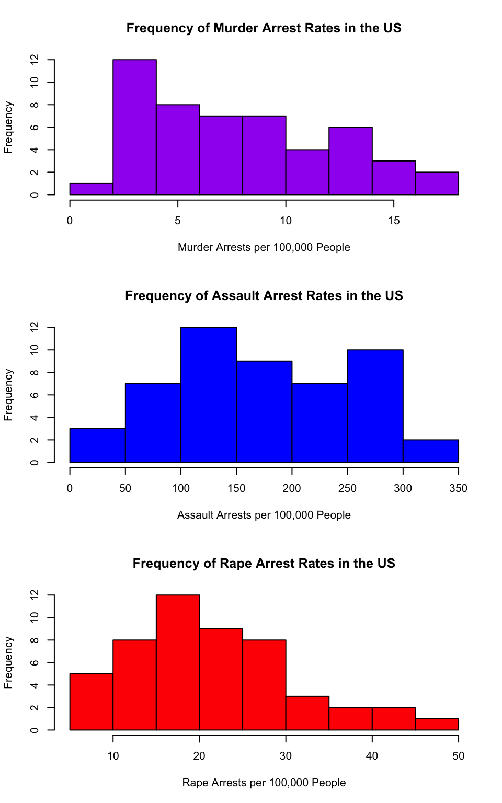
What does the command par do, in your own words (you can look this up by asking R ?par)?
Answer: The ‘par’ command sets parameters for graphs, changes how they are displayed, and allows us to tell R to compare additional variables within the data set. ‘mfrow’ puts things in an array, and the parameters of (1,3) tell it to display them stacked on top of each other, rather than side by side or otherwise.
What can you learn from plotting the histograms together?
Answer: We can learn that assault arrest rates per 100,000 people are far higher than the arrest rates for murder and rape by comparing the x axis of all three histograms. Additionally, while the frequency of arrest rates for rape and murder skew relatively right and are unimodal, the frequency of assault arrest rates is bimodal. Comparing and plotting them together can generally help us visually compare distributions overall.
Problem 8
In the console below (not in text), type install.packages("maps") and press Enter, and then type install.packages("ggplot2") and press Enter. This will install the packages so you can load the libraries.
Run this code:
# install.packages('maps') install.packages('ggplot2')
library("maps")
library("ggplot2")
ggplot(dat, aes(map_id = state, fill = Murder)) + geom_map(map = map_data("state")) +
expand_limits(x = map_data("state")$long, y = map_data("state")$lat)
What does this code do? Explain what each line is doing.
Answer:
# install.packages('maps')
#- This line installs a package that allows for map-drawing based on state names provided within the data.
# install.packages('ggplot2')
#- This line installs a package that makes improves the data visualization so that the map is easier to understand.
# library('maps')
#- This line tells R where to find the package to help draw the map
# library('ggplot2')
#- This line tells R where to find the package to help draw the map
# ggplot(dat, aes(map_id=state, fill=Murder)) +
# geom_map(map=map_data('state')) +
# expand_limits(x=map_data('state')$long,
# y=map_data('state')$lat)
#- This line tells R to use ggplot and to take information from dat variable 'state', and then to draw a map with US states, specifically using numbers from the Murder column. This line also instructs R to color each state based on the numbers in the 'Murder' column. It additionally tells R to make the x and y axes and limits align with longitude and latitude in a US map.Assignment 2
Collaborators: Theodora Athanitis
Problem 1
Instructions: Copy your code, paste it into a Word document, and turn it into Canvas. You can turn in a .docx or .pdf file. Show any EDA (graphical or non-graphical) you have used to come to this conclusion.
Problem 1: Load data
Set your working directory to the folder where you downloaded the data.
setwd("/Users/toriborlase/Desktop/University of Pennsylvania/Fall 2021/CRIM 250/Tori-Borlase-Crim-250")Read the data
dat <- read.csv(file = "dat.nsduh.small.1.csv")What are the dimensions of the dataset?
dim(dat)## [1] 171 7Answer: 171 by 7. 171 rows and 7 columns.
Problem 2: Variables
Describe the variables in the dataset.
names(dat)## [1] "mjage" "cigage" "iralcage" "age2" "sexatract" "speakengl"
## [7] "irsex"Answer: The variables in the dataset are mjage, cigage, iralcage, age2, sexatract, speakengl, and irsex. According to the code book, these correspond to how old someone was when they first tried marijuana or hashish, how old someone was when they started smoking cigarettes every day, how old someone was when they first tried alcohol, the final age that someone was determined to be at the time of taking the survey (which was asked multiple times as a consistency check), which statement about sexual orientation best described the respondent’s feelings, how well they speak English, and imputation revised gender.
What is this dataset about? Who collected the data, what kind of sample is it, and what was the purpose of generating the data?
Answer: This dataset is from the 2019 National Survey on Drug Use and Health (NSDUH). Individuals within the Center for Behavioral Health Statistics and Quality collected this data in order to measure the “prevalence and correlates of substance use and mental health issues” in the US. This was a stratified random sample, as they collected data in all 50 states for civilian and non-institutionalized populations.
Problem 3: Age and gender
What is the age distribution of the sample like? Make sure you read the codebook to know what the variable values mean.
counts <- table(dat$age2)
barplot(counts, main = "Histogram of Ages of Participants", xlab = "Age Category",
ylab = "Frequency")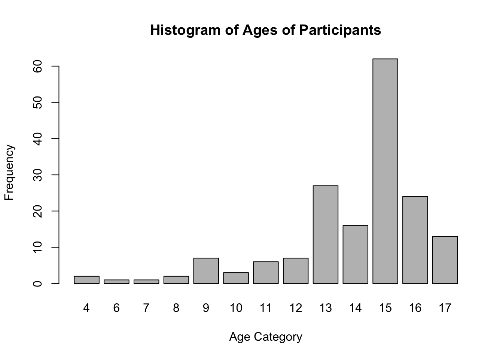
Answer: The age distribution of this sample is skewed left. However, because the numbers within the data set are not actual ages, but rather a range of ages or individual ages that are coded as numbers 1 through 17, we cannot base our true age distribution off of the numbers that form the labels of the histogram. While it appears that the Final Edited Age is skewed left, this may just be because the upper coded ages contain wider ranges of ages, and the lower coded ages contain only one or two ages.
Do you think this age distribution representative of the US population? Why or why not?
Answer: No, I do not believe this age distribution is representative of the US population. According to Census data, and other population pyramids that display the distribution of population, there are many more younger people than are represented in this graph, as well as many individuals outside of the scope of the study, such as those under 12, etc. Even though (as I mentioned before) there are multiple ages within certain categories, this data shows many more older individuals compared to teenagers and those in their early twenties, and Census data shows large numbers of those populations.
Is the sample balanced in terms of gender? If not, are there more females or males?
table(dat$irsex)##
## 1 2
## 91 801 (Male) 2 (Female) 91 80
counts <- table(dat$irsex)
barplot(counts, main = "Gender Distribution", xlab = "Gender",
ylab = "Frequency", names = c("Male", "Female"))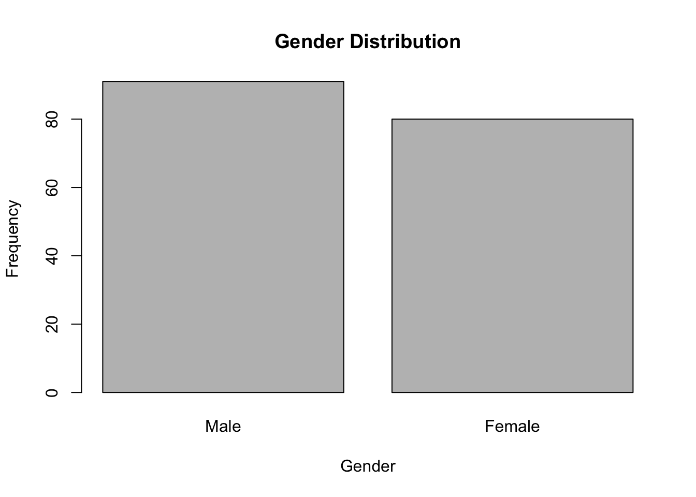
Answer: The sample is not gender balanced, as there are more males (91) than females (80). Using a bar chart clearly demonstrates this disparity.
Use this code to draw a stacked bar plot to view the relationship between sex and age. What can you conclude from this plot?
tab.agesex <- table(dat$irsex, dat$age2)
barplot(tab.agesex, main = "Age and Gender Comparison", xlab = "Age Category",
ylab = "Frequency", legend.text = c("Male", "Female"), xlim = c(0,
17), beside = FALSE) # Stacked bars (default)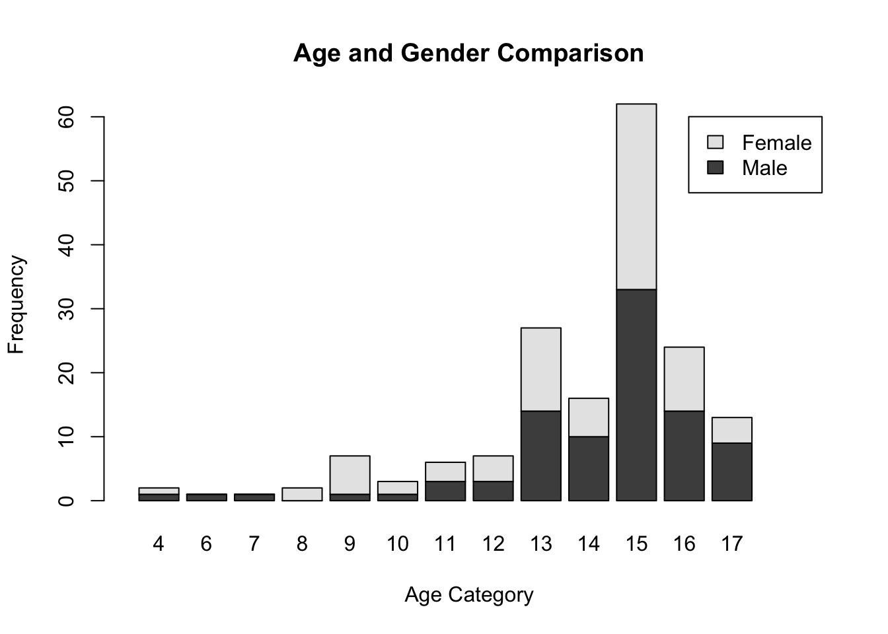
Answer: We can conclude from this plot that for most age categories, there were more males than females. However, for age categories 8, 9, 13, and 15, there appear to be more females or the same number of males and females.
Problem 4: Substance use
For which of the three substances included in the data set (marijuana, alcohol, and cigarettes) do individuals tend to use the substance earlier?
par(mfrow = c(3, 1))
hist(dat$mjage, main = "Histogram of Age of First Marijuana Use",
xlab = "Age Categories", ylab = "Frequency", xlim = c(0,
50), ylim = c(0, 50), breaks = 20)
hist(dat$iralcage, main = "Histogram of Age of First Alcohol Use",
xlab = "Age Categories", ylab = "Frequency", xlim = c(0,
50), ylim = c(0, 50), breaks = 20)
hist(dat$cigage, main = "Histogram of Age of Starting to Smoke Cigarettes Daily",
xlab = "Age Categories", ylab = "Frequency", xlim = c(0,
50), ylim = c(0, 50), breaks = 20)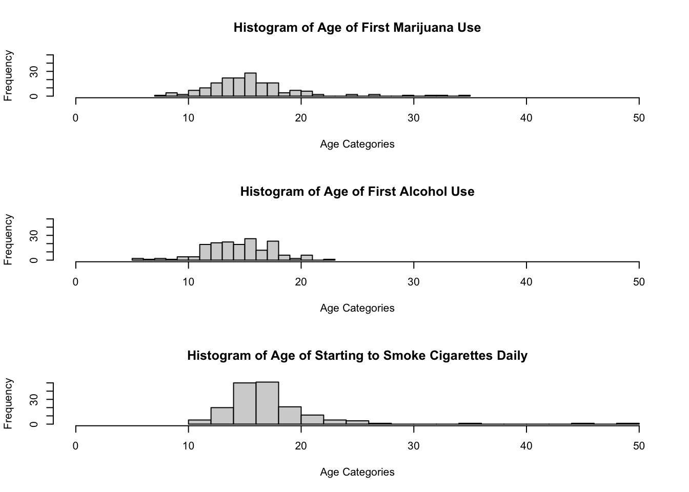
Individuals tend to use alcohol earlier, as seen on the histograms.
Problem 5: Sexual attraction
What does the distribution of sexual attraction look like? Is this what you expected?
dat1 <- dat[dat$sexatract != 99, ]
counts1 <- table(dat1$sexatract)
barplot(counts1, main = "Sexual Attraction Distribution", xlab = "Sexual Attraction Categories",
ylab = "Frequency", ylim = c(0, 150))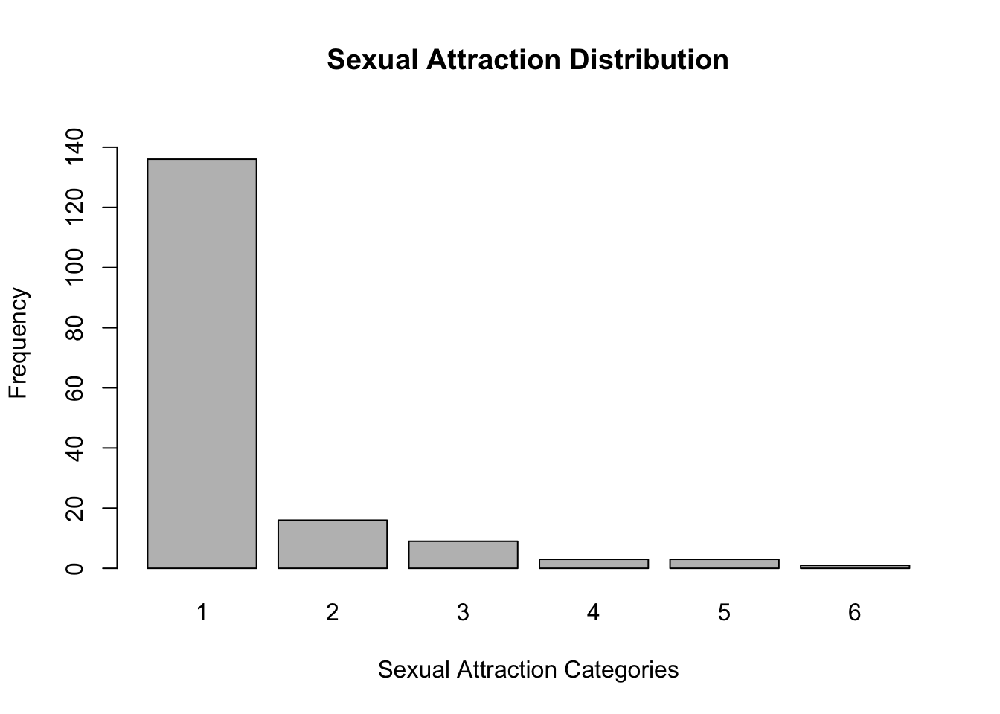
Answer: The distribution of sexual attraction is skewed right, which is what I expected, as most people identify as only being attracted to the opposite sex, with fewer people identifying as being attracted to the same sex in any way. This is what I expected because I believe that LGBT+ populations are still a relatively small minority within the US compared to those who are only attracted to the opposite sex.
What is the distribution of sexual attraction by gender?
dat1 <- dat[dat$sexatract != 99, ]
tab.sexor <- table(dat1$irsex, dat1$sexatract)
barplot(tab.sexor, main = "Sexual Attraction and Gender Comparison",
xlab = "Sexual Attraction Category", ylab = "Frequency",
legend.text = c("Male", "Female"), xlim = c(0, 7), ylim = c(0,
140), beside = FALSE) # Stacked bars (default)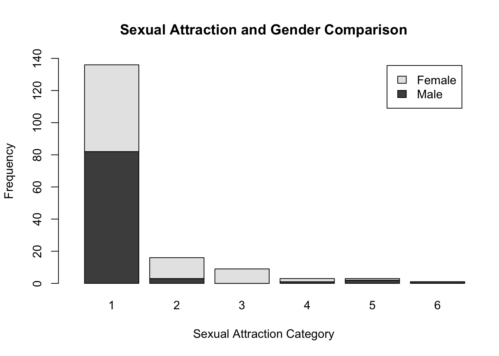
The distribution by gender is also skewed right, but there are more females that identify with statements about being attracted to the same sex in some way, and more males that identify with statements about being attracted to the opposite sex, as can be seen in the stacked bar chart.
Problem 6: English speaking
What does the distribution of English speaking look like in the sample? Is this what you might expect for a random sample of the US population?
counts2 <- table(dat$speakengl)
barplot(counts2, main = "English Language Category Frequency",
xlab = "English Speaking Categories", ylab = "Frequency",
ylim = c(0, 200))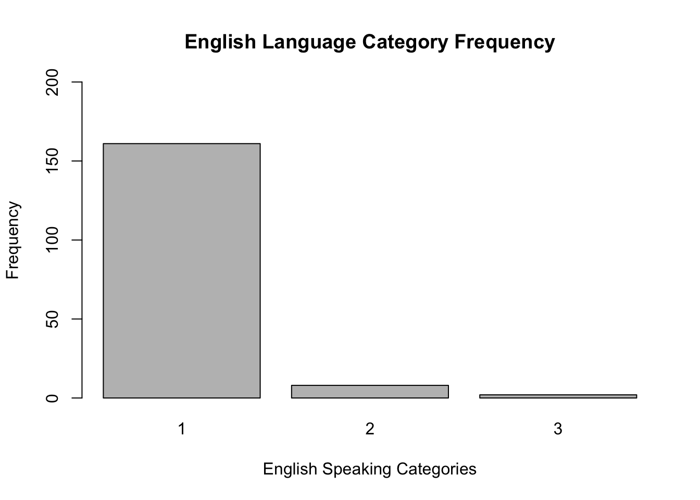
This distribution is also skewed right, with most individuals responding that they speak English very well, and less than 50 individuals total saying that the speak English well or not well, and nobody saying they did not speak English at all. This is similar to the distribution that I would expect in the United States because even though the US has no official language, most people need to speak some English in order to work and live here. However, there are probably more people in the US that speak no English at all, but they just were not able to participate in the survey because it was conducted in English.
Are there more English speaker females or males?
table(dat$irsex, dat$speakengl)##
## 1 2 3
## 1 84 7 0
## 2 77 1 2tab.sexor <- table(dat$irsex, dat$speakengl)
barplot(tab.sexor, main = "English Skill and Gender Comparison",
xlab = "English Ability Category", ylab = "Frequency", legend.text = c("Male",
"Female"), xlim = c(0, 4), ylim = c(0, 200), beside = FALSE) # Stacked bars (default)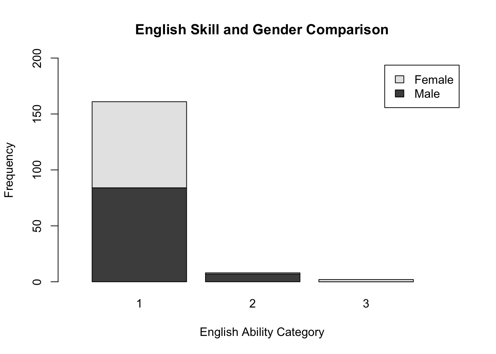
There are more male English speakers than female English speakers, but that might also be due to the fact that there are more males than females within the data set to begin with.
Exam 1
Instructions
Create a folder in your computer (a good place would be under Crim 250, Exams).
Download the dataset from the Canvas website (fatal-police-shootings-data.csv) onto that folder, and save your Exam 1.Rmd file in the same folder.
Download the README.md file. This is the codebook.
Load the data into an R data frame.
setwd("/Users/toriborlase/Desktop/University of Pennsylvania/Fall 2021/CRIM 250/Tori-Borlase-Crim-250")
dat <- read.csv(file = "fatal-police-shootings-data.csv")Problem 1 (10 points)
- Describe the dataset. This is the source: https://github.com/washingtonpost/data-police-shootings . Write two sentences (max.) about this.
This dataset was collected by the Washington Post and contains records of every fatal shooting by a police officer in the U.S. since January 1, 2015. The data includes names, dates, manner of death, if that individual was armed, their age, gender, race, location, as well as other general factors, and an ID number of each individual who was victimized according to the criteria established by the Washington Post.
- How many observations are there in the data frame?
dim(dat)## [1] 6594 17There are 6594 observations in the data set, as well as 17 variables.
- Look at the names of the variables in the data frame. Describe what “body_camera”, “flee”, and “armed” represent, according to the codebook. Again, only write one sentence (max) per variable.
names(dat)## [1] "id" "name"
## [3] "date" "manner_of_death"
## [5] "armed" "age"
## [7] "gender" "race"
## [9] "city" "state"
## [11] "signs_of_mental_illness" "threat_level"
## [13] "flee" "body_camera"
## [15] "longitude" "latitude"
## [17] "is_geocoding_exact"The variable “body_camera” represents that news reports have indicated an officer was wearing a body camera and it may have recorded some portion of the incident. The variable “flee” represents if news reports have indicated the victim was moving away from officers, as well as if they were fleeing by car or by foot, or otherwise. The variable “armed” indicates that the victim was armed with some sort of implement that a police officer believed could inflict harm, as well as detailing what that implement was.
- What are three weapons that you are surprised to find in the “armed” variable? Make a table of the values in “armed” to see the options.
table(dat$armed)##
## air conditioner
## 207 1
## air pistol Airsoft pistol
## 1 3
## ax barstool
## 24 1
## baseball bat baseball bat and bottle
## 20 1
## baseball bat and fireplace poker baseball bat and knife
## 1 1
## baton BB gun
## 6 15
## BB gun and vehicle bean-bag gun
## 1 1
## beer bottle binoculars
## 3 1
## blunt object bottle
## 5 1
## bow and arrow box cutter
## 1 13
## brick car, knife and mace
## 2 1
## carjack chain
## 1 3
## chain saw chainsaw
## 2 1
## chair claimed to be armed
## 4 1
## contractor's level cordless drill
## 1 1
## crossbow crowbar
## 9 5
## fireworks flagpole
## 1 1
## flashlight garden tool
## 2 2
## glass shard grenade
## 4 1
## gun gun and car
## 3798 12
## gun and knife gun and machete
## 22 3
## gun and sword gun and vehicle
## 1 17
## guns and explosives hammer
## 3 18
## hand torch hatchet
## 1 14
## hatchet and gun ice pick
## 2 1
## incendiary device knife
## 2 955
## knife and vehicle lawn mower blade
## 1 2
## machete machete and gun
## 51 1
## meat cleaver metal hand tool
## 6 2
## metal object metal pipe
## 5 16
## metal pole metal rake
## 4 1
## metal stick microphone
## 3 1
## motorcycle nail gun
## 1 1
## oar pellet gun
## 1 3
## pen pepper spray
## 1 2
## pick-axe piece of wood
## 4 7
## pipe pitchfork
## 7 2
## pole pole and knife
## 3 2
## railroad spikes rock
## 1 7
## samurai sword scissors
## 4 9
## screwdriver sharp object
## 16 14
## shovel spear
## 7 2
## stapler straight edge razor
## 1 5
## sword Taser
## 23 34
## tire iron toy weapon
## 4 226
## unarmed undetermined
## 421 188
## unknown weapon vehicle
## 82 213
## vehicle and gun vehicle and machete
## 8 1
## walking stick wasp spray
## 1 1
## wrench
## 1Even though only one was reported, I was surprised to see a bean-bag gun because I have no idea what that is (but it sounds interesting). I was also surprised by the spear and railroad spike reports, especially because those weapons seem very difficult to obtain in the 21st Century.
Problem 2 (10 points)
- Describe the age distribution of the sample. Is this what you would expect to see?
counts <- table(dat$age)
hist(dat$age, main = "Histogram of Age", xlab = "Years", ylab = "Frequency")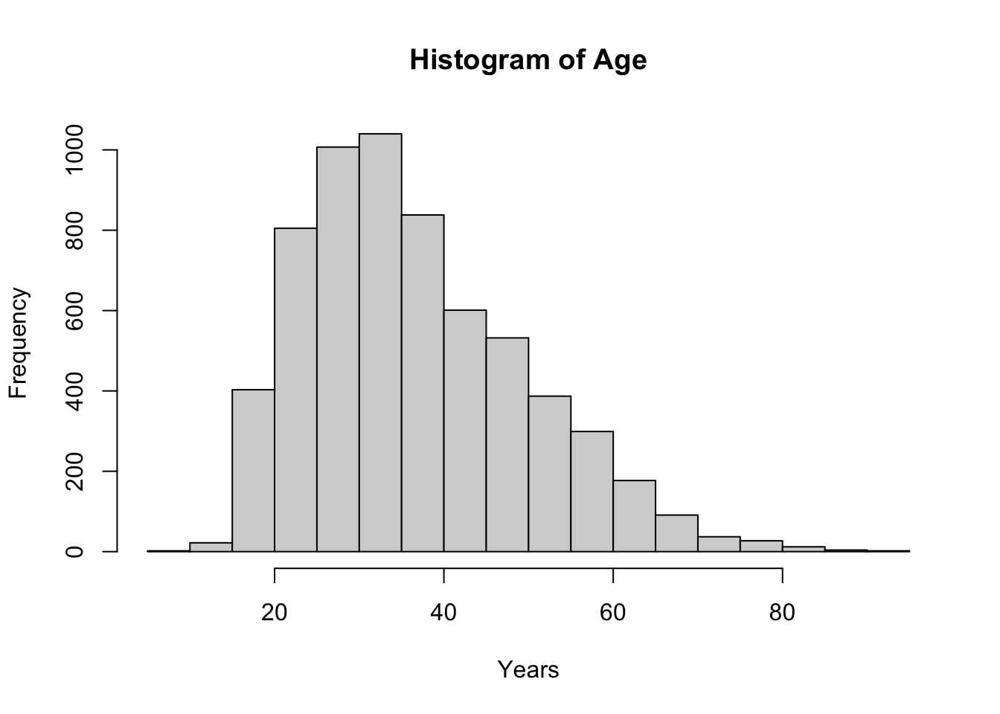
The sample of ages is skewed right, with the highest frequency of reported age being between 20 and 40 years. I would expect to see this distribution because I expect most people that the police find threatening (and would have used force against) would have to be an age where they would be physically capable of injuring an officer or other people.
- To understand the center of the age distribution, would you use a mean or a median, and why? Find the one you picked.
summary(dat$age)## Min. 1st Qu. Median Mean 3rd Qu. Max. NA's
## 6.00 27.00 35.00 37.12 45.00 91.00 308Because our data is skewed, I would use a median to understand the center of the distribution, as a mean may be impacted by the data points that are on the right-hand side of the graph in a way that makes it seem like the center of the data is higher. This is demonstrated by our summary, where we can see that the median is 35.00, and the mean is 37.12. In this case, the median age is 35.00.
- Describe the gender distribution of the sample. Do you find this surprising?
counts <- table(dat$gender)
barplot(counts, main = "Gender Distribution", xlab = "Gender",
names = c("Female", "Male", "Unknown"))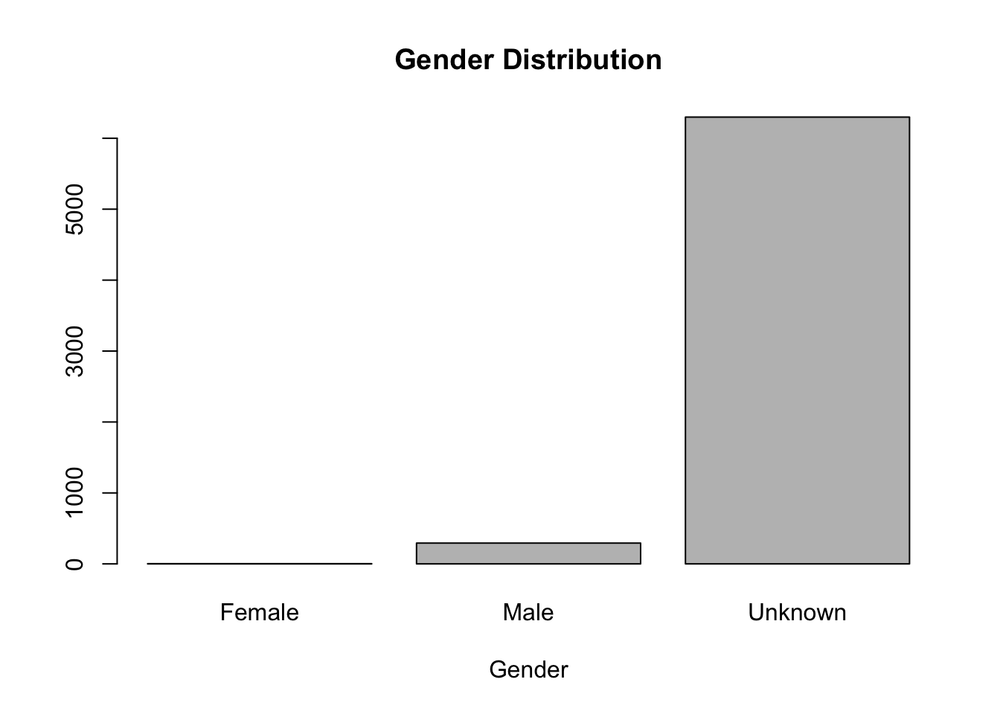
table(dat$gender)##
## F M
## 3 293 6298dat1 <- dat[dat$gender != "", ]
counts1 <- table(dat1$gender)
barplot(counts1, main = "Gender Distribution", xlab = "Gender",
names = c("Female", "Male"))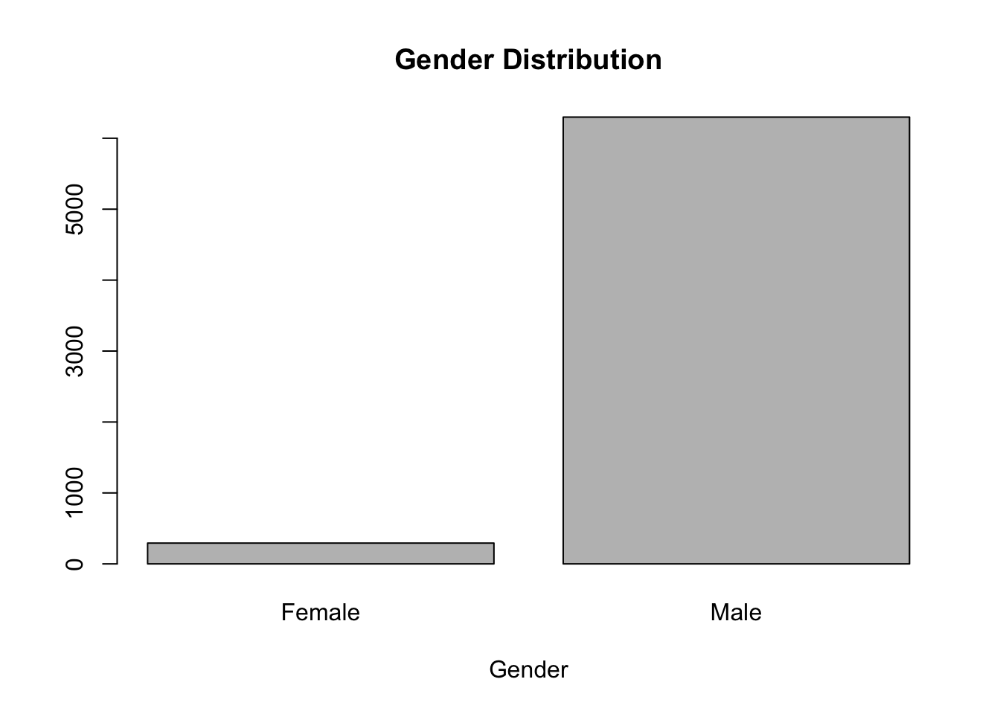
It is clear from the first bar plot that most genders of individuals are unknown. However, if we remove the individuals with unknown gender, we can see that most victims were male. This is not surprising, as to my knowledge most people who are victims of homicide in general are male, and police are also more likely to perceive males as threatening, which may mean they are more likely to use force against them.
Problem 3 (10 points)
- How many police officers had a body camera, according to news reports? What proportion is this of all the incidents in the data? Are you surprised that it is so high or low?
table(dat$body_camera)##
## False True
## 5684 910910 police had a body camera according to the news reports, and 5684 did not. Out of all incidents (6594), that would mean that only 13.8 percent of police had a body camera. I am not surprised that this is low, as body cameras are expensive, and also are only more recently becoming common. Given that this data collection started in 2015, it may just be the case that most police districts do not mandate body cameras or do not have the funding to provide body cameras to all of their police officers.
- In how many of the incidents was the victim fleeing? What proportion is this of the total number of incidents in the data? Is this what you would expect?
table(dat$flee)##
## Car Foot Not fleeing Other
## 491 1058 845 3952 248Because people were identified as fleeing both on foot and in a car, we can add 1058 and 845 to get a total number of incidents where the victim was fleeing: 1903. While only 3952 people were marked as not fleeing, there are unknown values, as well as values marked “Other” that we cannot determine if they were fleeing or not. So, the true number of people fleeing might be more than 1903, but we cannot tell what the other individuals did. The proportion of those who fled compared to overall reports (aka including the “Other” reports, not just compared to those who did not flee) is 28.9 percent. This is a bit higher than I was expecting, because normally, I associate police shootings with police officers claiming self-defense. However, almost 30% of people were fleeing the police officer at the time of the shooting, which seems like a very high number to me since police tend to claim that the victim was being aggressive and approaching them in a threatening way. However, it might make sense if police are trained to shoot individuals who are fleeing from a crime, but I don’t have any knowledge of if police officers are trained to shoot in those situations.
Problem 4 (10 points) - Answer only one of these (a or b).
- Describe the relationship between the variables “body camera” and “flee” using a stacked barplot. What can you conclude from this relationship?
Hint 1: The categories along the x-axis are the options for “flee”, each bar contains information about whether the police officer had a body camera (vertically), and the height along the y-axis shows the frequency of that category).
Hint 2: Also, if you are unsure about the syntax for barplot, run ?barplot in R and see some examples at the bottom of the documentation. This is usually a good way to look up the syntax of R code. You can also Google it.
tab.sexor <- table(dat$body_camera, dat$flee)
barplot(tab.sexor, main = "Comparing Fleeing Victims to Body Cam Rates",
xlab = "Did the Victim Flee?", ylab = "Frequency", legend.text = c("No Body Cam",
"Body Cam"), xlim = c(0, 10), ylim = c(0, 5000), beside = FALSE)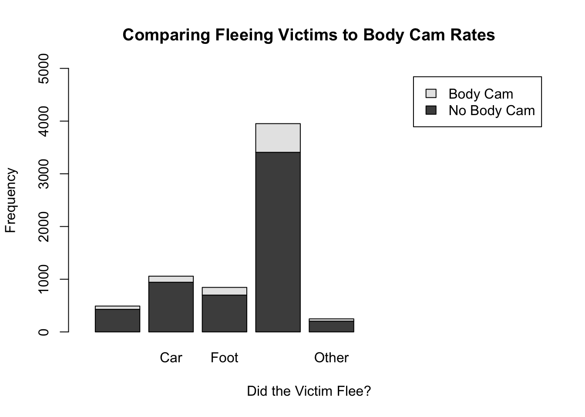
First, it is important to note that there were many incidents of police shootings where we are unsure if the victim fled or not, and those columns without a label or labeled “Other” are reflecting those incidents. Even though the “other” column might represent people who fled in a different way than by car or by foot, the codebook does not specify, so I will just consider those values to have unknown significance. Even though it is very clear that most police officers did not have body cameras, it looks like there is a higher level of body cameras involved in incidents where people don’t flee as compared to the incidents when people do flee (i.e. by car or by foot). We could conclude many things from this observation, one of which being that police are more likely to accurately report that the victim was not fleeing if there was video evidence. However, it may also be the case that in situations where police have to chase people who are fleeing, they are not wearing body cameras. Overall, I hesitate to conclude anything about the direct relationship between these variables, but I can say that it looks apparent that there was a higher rate of body cameras among the police officers that shot people who were not fleeing.
- Describe the relationship between age and race by using a boxplot. What can you conclude from this relationship?
Hint 1: The categories along the x-axis are the race categories and the height along the y-axis is age.
Hint 2: Also, if you are unsure about the syntax for boxplot, run ?boxplot in R and see some examples at the bottom of the documentation. This is usually a good way to look up the syntax of R code. You can also Google it.
N/A.
Extra credit (10 points)
- What does this code tell us?
mydates <- as.Date(dat$date)
head(mydates)
(mydates[length(mydates)] - mydates[1])
`?`(length)This code tells us a few things. The first line tells r not to evaluate this r chunk, which is helpful especially as this extra credit question is not involving the data that we are currently using for our other problems. The second line tells us to make a new data frame called mydates, and to interpret values from the date column in dat as calendar dates rather than normal character representations. The third line tells r to read the first few entries of the data frame mydates. The fourth line tells r to set the length of mydates to a certain value.
- On Friday, a new report was published that was described as follows by The Guardian: “More than half of US police killings are mislabelled or not reported, study finds.” Without reading this article now (due to limited time), why do you think police killings might be mislabeled or underreported?
The dataset we were given was only measuring the number and types of police killings that were both shootings as well as reported in the news. Because the Washington Post data that we used was only based on news reports, it is likely that there are many police killings that are not published in the news. Therefore, because it may be hard to access police reports in order to get a more complete idea of the incidents that happen, police killings may be underreported. Additionally, police shootings may be mislabeled because oftentimes police are the only people who have a complete record of what occured at a scene, and police are probably unwilling to accurately report what happened in order to avoid punitive measures. Especialy given that so many people do not have body cameras, police may be lying about what happened in order to avoid losing their job or other criminal implications.
- Regarding missing values in problem 4, do you see any? If so, do you think that’s all that’s missing from the data?
For problem 4 I selected a barplot of flee and body-cameras. There were a bunch of missing values in the flee category, their flee status could have been in a way other than by car or by foot, and there were also people who simply did not have any value entered in the flee category. It is unlikley that that’s all that is missing from the data - because this data was collected from news articles, and not all news reporters are mandated to report on every single variable that the researchers were tracking, I am sure that there were other missing values. There were also unknown genders that we had to remove from the data set earlier in another problem, which indicates that there is absolutely more missing data in this set. Despite this fact, it is still good to collect this type of data so that we can analyze it.
Assignment 3
Collaborators: Theodora Athanitis.
knitr::opts_chunk$set(echo = TRUE)This assignment is due on Canvas on Wednesday 10/27/2021 before class, at 10:15 am. Include the name of anyone with whom you collaborated at the top of the assignment.
Submit your responses as either an HTML file or a PDF file on Canvas. Also, please upload it to your website.
Save the file (found on Canvas) crime_simple.txt to the same folder as this file (your Rmd file for Assignment 3).
Load the data.
library(readr)
library(knitr)
dat.crime <- read_delim("crime_simple.txt", delim = "\t")## Rows: 47 Columns: 14## ── Column specification ────────────────────────────────────────────────────────
## Delimiter: "\t"
## dbl (14): R, Age, S, Ed, Ex0, Ex1, LF, M, N, NW, U1, U2, W, X##
## ℹ Use `spec()` to retrieve the full column specification for this data.
## ℹ Specify the column types or set `show_col_types = FALSE` to quiet this message.This is a dataset from a textbook by Brian S. Everitt about crime in the US in 1960. The data originates from the Uniform Crime Report of the FBI and other government sources. The data for 47 states of the USA are given.
Here is the codebook:
R: Crime rate: # of offenses reported to police per million population
Age: The number of males of age 14-24 per 1000 population
S: Indicator variable for Southern states (0 = No, 1 = Yes)
Ed: Mean of years of schooling x 10 for persons of age 25 or older
Ex0: 1960 per capita expenditure on police by state and local government
Ex1: 1959 per capita expenditure on police by state and local government
LF: Labor force participation rate per 1000 civilian urban males age 14-24
M: The number of males per 1000 females
N: State population size in hundred thousands
NW: The number of non-whites per 1000 population
U1: Unemployment rate of urban males per 1000 of age 14-24
U2: Unemployment rate of urban males per 1000 of age 35-39
W: Median value of transferable goods and assets or family income in tens of $
X: The number of families per 1000 earning below 1/2 the median income
We are interested in checking whether the reported crime rate (# of offenses reported to police per million population) and the average education (mean number of years of schooling for persons of age 25 or older) are related.
1.
How many observations are there in the dataset? To what does each observation correspond?
dim(dat.crime)## [1] 47 14There are 47 observations in the dataset. Each observation corresponds with a state in the US.
2.
Draw a scatterplot of the two variables. Calculate the correlation between the two variables. Can you come up with an explanation for this relationship?
library(readr)
library(knitr)
plot(dat.crime$Ed, dat.crime$R, main = "Relationship between Reported Crime Rate and Average Education",
xlab = "mean number of years of schooling for persons of age 25 or older",
ylab = "# of offenses reported to police per million population")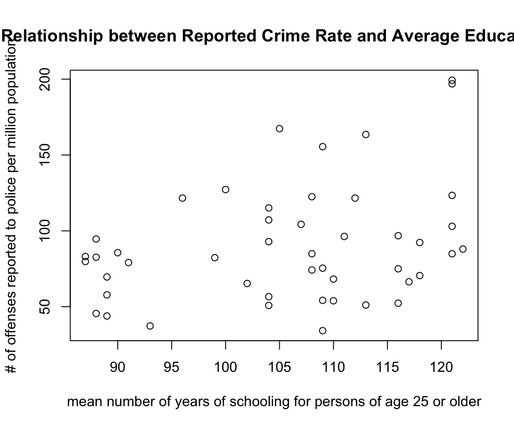
cor(dat.crime$Ed, dat.crime$R)## [1] 0.3228349The correlation between these two variables is 0.3228349. This makes sense because there seems to be little relationship in the scatter plot between the two variables.
3.
Regress reported crime rate (y) on average education (x) and call this linear model crime.lm and write the summary of the regression by using this code, which makes it look a little nicer {r, eval=FALSE} kable(summary(crime.lm)$coef, digits = 2).
# Remember to remove eval=FALSE above!
crime.lm <- lm(formula = R ~ Ed, data = dat.crime)
kable(summary(crime.lm)$coef, digits = 2)| Estimate | Std. Error | t value | Pr(>|t|) | |
|---|---|---|---|---|
| (Intercept) | -27.40 | 51.81 | -0.53 | 0.60 |
| Ed | 1.12 | 0.49 | 2.29 | 0.03 |
4.
Are the four assumptions of linear regression satisfied? To answer this, draw the relevant plots. (Write a maximum of one sentence per assumption.)
plot(crime.lm, which = 1)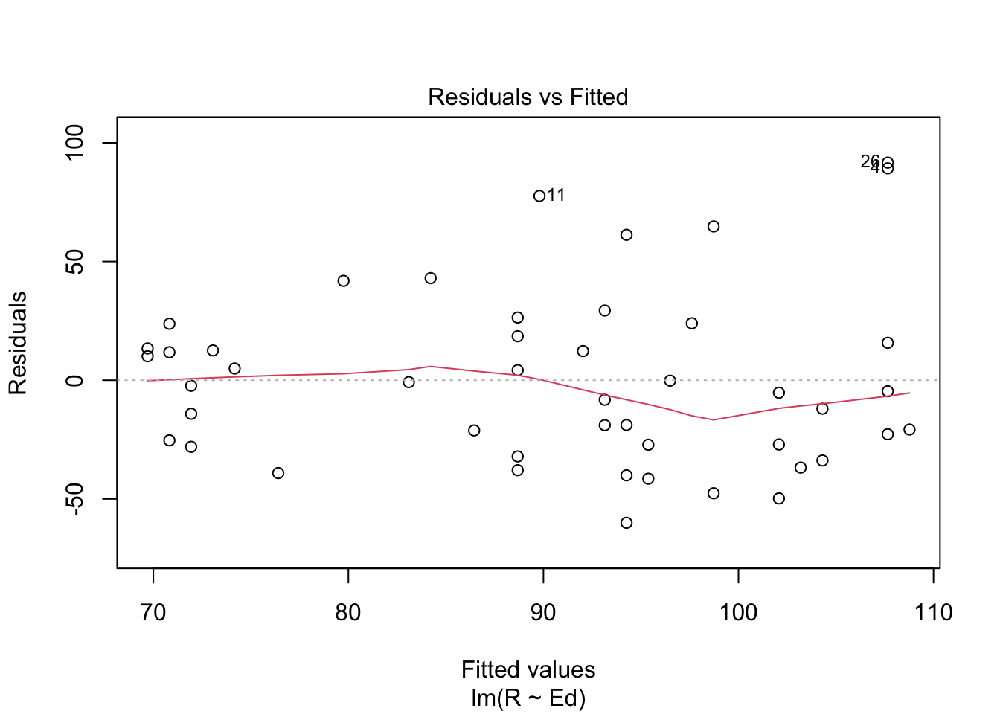
Assumption 1: Linearity. This assumption is satisfied because the line representing average value of the residuals at each value of fitted value looks relatively flat.
plot(dat.crime$Ed, crime.lm$residuals, ylim = c(-100, 100), main = "Residuals vs. x",
xlab = "x, Average Ed", ylab = "Residuals")
abline(h = 0, lty = "dashed")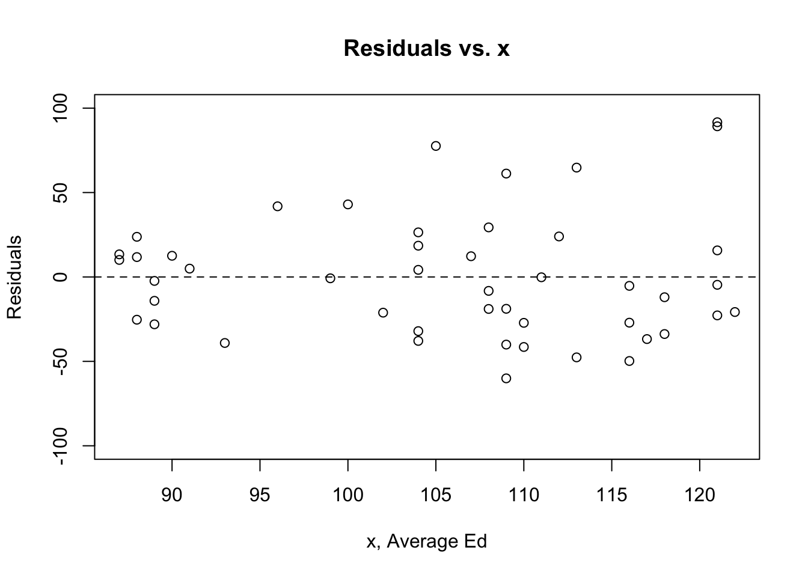
Assumption 2: Independence. While there is no way to check this is true, based on our plots, this assumption is satisfied because there is no apparent patterns in the residuals plot.
plot(crime.lm, which = 3)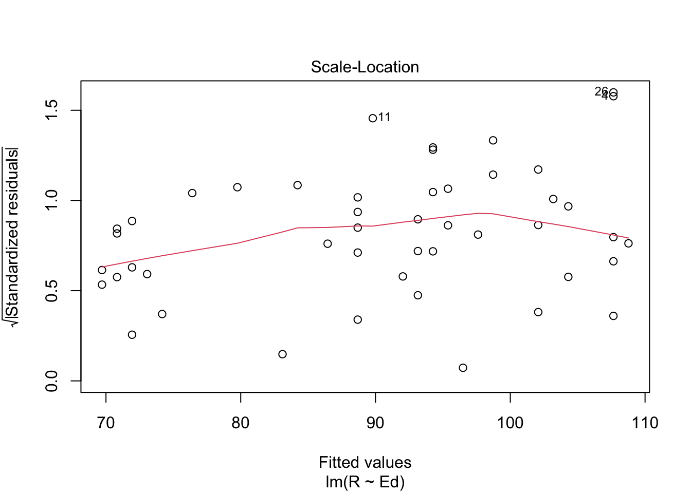
Assumption 3: Homoscedasticity. There appears to be no patterns in variability of x and y, and the scale-location plot above appears to have a relatively flat line.
plot(crime.lm, which = 2)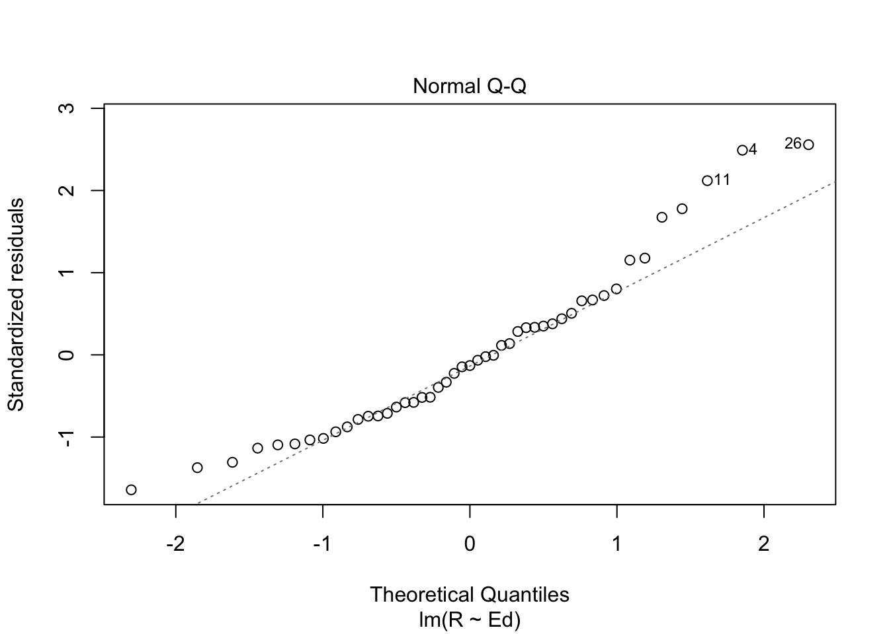
Assumption 4: Normal Population. The values in the top right and the shape of the QQ plot show that it may have a light tail, or may be smaller than usual for a normal distribution.
5.
Is the relationship between reported crime and average education statistically significant? Report the estimated coefficient of the slope, the standard error, and the p-value. What does it mean for the relationship to be statistically significant?
summary(crime.lm)##
## Call:
## lm(formula = R ~ Ed, data = dat.crime)
##
## Residuals:
## Min 1Q Median 3Q Max
## -60.061 -27.125 -4.654 17.133 91.646
##
## Coefficients:
## Estimate Std. Error t value Pr(>|t|)
## (Intercept) -27.3967 51.8104 -0.529 0.5996
## Ed 1.1161 0.4878 2.288 0.0269 *
## ---
## Signif. codes: 0 '***' 0.001 '**' 0.01 '*' 0.05 '.' 0.1 ' ' 1
##
## Residual standard error: 37.01 on 45 degrees of freedom
## Multiple R-squared: 0.1042, Adjusted R-squared: 0.08432
## F-statistic: 5.236 on 1 and 45 DF, p-value: 0.02688The estimated coefficient of slope is 1.1161. The Standard Error is 0.4878. The p-value is 0.0269. However, because of the QQ plot results, this significance result may be too strong compared to reality, so we should be cautious when saying that the relationship is statistically significant even though the p-value is less than .05. A relationship is statistically significant when the result is very unlikely to be due to chance; in this case, having these results is relatively unlikely if there is no correlation between R and Ed.
6.
How are reported crime and average education related? In other words, for every unit increase in average education, how does reported crime rate change (per million) per state?
For every unit increase in average education, reported crime rate increases by 1.1161 (per million) per state.
7.
Can you conclude that if individuals were to receive more education, then crime will be reported more often? Why or why not?
No. Just because these variables are correlated does not prove that one of them causes the other to occur. There may be causation in the reverse way, where crime being reported more often causes individuals to recieve more education, or there may be a third variable or condition that is causing both of them to change.
\[\\[2in]\]